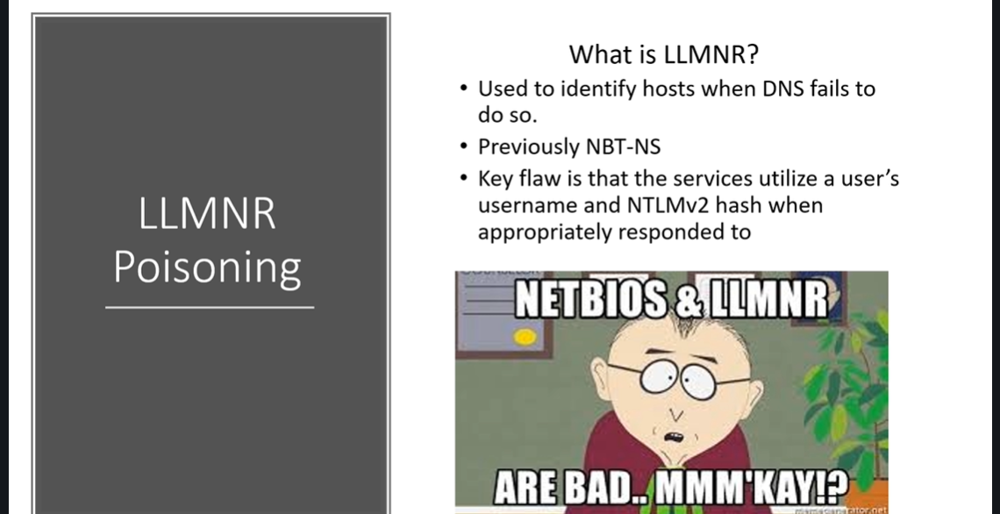

NBT-NS = NETBIOS NAME SERVICE
And the key flaw about the llmnr here is that when we respond to this service it actually responds back to us with a username and password hash and it's really bad.

this is actually a man-in-the-middle attack.
TCM
"we're going to run so called responder. Responder is part of the impacket tool kit. It responds to these requests and we just run this tool and we load it up and we're just sitting there we're listening.
So my strategy is that i run this tool first thing in the morning so if my assesment start at 8 i'm running this as first thing the best time to run this as first thing in the morning or right after the lunch because people are coming back from lunch and you need a lot of traffic. So I will actually start this up before I start up any end map scans any NSA scans anything at all. This is one of the first things that goes up. Why do I do that? Because the nmap scan and the nessus scan is going to generate some traffic as well. And then it might actually get some traffic talking back to you from other machines. So we're just waiting for those responses and trying to capture hashes."


now here all i'm doing is i am pointing this at our attacker machine ip address. You not to worry about that too much. But just think of this as somebody typed in the wrong network drive. And this is just one example by the way a wrong network drive is just something failing to do DNS. We're going to point this out ourselves but that does not always have to be true. When the event occurs look what comes through."

"Now there's a lot of things that we can do with this hash and we're going to run a couple different attacks with it but the first attack we're going to talk about is just taking this hash and trying to crack it so we can take this hash and we're gonna run it through a tool called hash cat and you can see here that we actually crack the password to be password one which is what we set it when we first set up the lab."

So that's really it. All we're doing here is we're listening in man in the middle situation and this is very very common. So what happens here is if passwords are weak and guessable well then we're going to be able to crack these passwords with any sort of decent password cracking rig. Note that the better the graphics card the better your cracking speed will be.
TCM
"So from here just your big takeaway is we're doing man in the middle listening we're listening for any sort of event where we can take over in place of DNS and we're going to respond to these a tool called responder. We're going to pull down these hashes take them off line and try to crack them.
If the passwords are weak, When i say weak i mean like less than 14 characters.The longest passwprd that i've ever cracked is 19 characters and that was a bible verse. So just because your paswword is long does not mean that is good. "